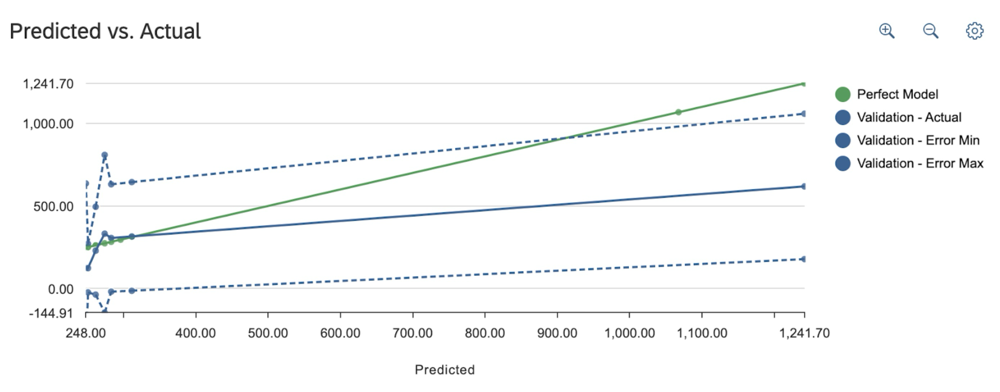

In the context of business analysis, stakeholders like Airbnb, property owners, investors, and researchers can utilize this dataset to explore trends, patterns, and factors influencing pricing, demand, and customer preferences within the Airbnb ecosystem. Insights from this dataset can inform strategic decision-making processes such as pricing strategies, marketing campaigns, and investment opportunities. This report presents the findings of a predictive analysis conducted on the dataset using linear regression, aiming to understand the factors influencing rental prices and develop a predictive model for forecasting prices for new listings.
The analysis provides valuable insights for hosts, property management companies, and investors operating in the Airbnb ecosystem. By understanding the influencers of rental prices, hosts can tailor pricing strategies to maximize occupancy rates and revenue while remaining competitive in the market. Pricing decisions significantly impact market positioning and the perceived value proposition of Airbnb listings. Hosts can leverage these insights to strategically position their properties relative to competitors and effectively target specific market segments.
Business questions that we aim to answer include:
This dataset comprises 232,148 unique Airbnb listings across the USA. There were 17 columns, each describing impact factors for choosing an Airbnb, such as host id, hostname, listing name, neighborhood, price, room type, minimum number of nights, number of reviews, last review date, reviews per month, availability, host listings, and city.
Before cleaning the data, we extracted a smaller sample out of the dataset. We used the RAND()= in Excel to randomly sort the data and from there we extracted 11,560 rows. From there, we began to clean the data. We started by removing three columns that we deemed as unnecessary for our project: Neighborhood group, Latitude, and Longitude. We then started to delete rows that had errors and/or blanks. Three rows were deleted due to blanks in the 'price' column and 868 rows were due to invalid neighborhood zip codes. After all this, we are left with 10,689 unique rows.
Due to some of the columns being in a text data form, we transformed the 'last_review' column into a number type. For example, one of the values in this column was 16/02/20, which tells us that the last review for this listing was on February 16, 2020. To turn this into a number type, we turned it into a number type which says how many days are between the value and 1/1/1900.
Three columns were categorical variables ('neighborhood', 'room_type', and 'city') that we turned into dummy variables. The 'neighborhood' column was turned into 'neighborhood_is_hollywood', as it is the most common neighborhood. The value 1 was given if the neighborhood is in Hollywood and the value 0, if the neighborhood is not in Hollywood. The neighborhood column was then deleted. The 'room_type' column was turned into three new columns for each room type, 'is_private_room', 'is_hotel_room', and 'is_entire_home/apt'. The column for 'shared_room' was deleted due to multicollinearity. The last transformation was for the 'city' column. In total there were 26 cities, so each city got its own column for whether or not the listing is in that city. Washington DC was deleted due to multicollinearity.
In the end, the dataset comprises 44 columns and 10,689 unique rows.
The dataset was partitioned into 3 sets, a training, validation, and test set. A number filter was used to get 80% of the dataset for the training set, and 10% for both the validation and test data set. In the validation set, there are 1,039 records. In the test set, there are 1,033 records. In the training set, there are 8,617 records.
Linear regression is a basic statistical technique for simulating the relationship between a dependent variable and one or more independent variables. We used linear regression in this investigation to determine how different characteristics affect Airbnb rental costs.
The reason we used linear regression was because it is a simple method for comprehending the linear correlations between variables is to use linear regression. Because of its simplicity of interpretation, stakeholders without a strong foundation in statistics can benefit from it. Also, It serves as an excellent baseline model to compare with more complex techniques.
Decision tree regression is a non-linear predictive modeling technique that splits the data into subsets based on the value of input features, creating a tree-like structure. The reason we used a decision tree regression is that they can handle non-linear relationships between features and the target variable, making them suitable for complex datasets. They also provide insights into the relative importance of different predictors, helping in feature selection and understanding key drivers of rental prices.
These are the predictors we included:
The Root Mean Square Error (RMSE) is 375.37, which indicates the average error in predicting rental prices. It measures the average difference between values predicted by a model and the actual values. The RMSE of 375.37 means that the model overpredicts the price of a stay by almost $400. The model's prediction confidence is 79.50%, reflecting a relatively high level of accuracy.
The model's performance is depicted in the chart by contrasting anticipated and actual values. The model's accuracy in predicting rental costs is demonstrated by how close the anticipated line is to the perfect model line.
The analysis conducted on the Airbnb dataset provides insights into the factors influencing rental prices and recommendations for hosts, property managers, and investors operating within the Airbnb ecosystem. Through the linear regression and decision tree regression models, the study identified key variables affecting rental costs and their relative importance.
The chosen predictors for the model include "is_entire_home/apt", "availability_365", "minimum_nights", "is_browardcounty", "calculated_host_listings_count", "reviews_per_month", "number_of_reviews", and "is_sanfrancisco". These variables were selected based on their perceived impact on rental prices and their availability within the dataset. The linear regression model highlighted the significance of variables such as the type of listing, annual availability, minimum nights, and specific locations in influencing rental pricing. The decision tree regression provided a more detailed understanding of how these factors contribute to rental costs, emphasizing the importance of host listing counts and review metrics.
Upon training the model on the provided dataset, the RMSE of 375.37 was calculated, indicating the average error in predicting rental prices. Additionally, an average error of roughly $70 was observed, suggesting that the model tends to underpredict the actual rental prices. The model's performance on the validation and test datasets also yielded similar results. Despite the relatively high prediction confidence of 79.50%, the large RMSE and average error indicate room for improvement in the model's predictive capabilities.
In response to these findings, several recommendations can be proposed for stakeholders in the Airbnb ecosystem. It is advised that hosts concentrate on providing complete homes or flats to maximize their Airbnb rental tactics, as these typically attract greater costs. Increasing the availability of listings all year long can increase reservations and increase potential revenue. Furthermore, a listing's appeal to a larger spectrum of guests can be increased by enacting flexible minimum night policies. To take advantage of the current favorable market conditions, investing in houses situated in high-demand areas, such as Broward County and San Francisco, is advised. Increasing the quantity of listings enables hosts to take advantage of economies of scale and improve their pricing tactics. Encouraging the creation of reviews is essential since regular, favorable reviews make a listing seem more appealing and trustworthy. Finally, finding and making investments in up-and-coming, fashionable neighborhoods can put hosts in a position to take advantage of rising demand and maximize rental income and competitiveness in the market.
Hosts may consider changing their pricing strategies by using these variables or exploring different predictive modeling techniques to enhance the accuracy of rental price forecasts. Continuous monitoring and evaluation of the model’s performance are essential to identify areas for improvement and optimization. Stakeholders should leverage insights from the predictive models to assist with pricing adjustments, marketing campaigns, and investment opportunities.
This paper uses sophisticated predictive modeling techniques to give a thorough examination of Airbnb rental prices. Using a large dataset of 232,148 distinct Airbnb listings from all around the United States, we carried out a thorough analysis to pinpoint the main variables affecting rental costs. Linear regression and decision tree regression were the two main predictive models used in the report, along with significant data preprocessing.
According to our data, rental prices are typically higher for listings that offer complete homes or flats, have flexible minimum night policies, and have better availability. Due to local market conditions, properties in high-demand areas, including Broward County, FL and San Francisco, CA have a substantial impact on pricing. Furthermore, hosts who have a large number of listings and get a lot of reviews are in a better position to maximize pricing tactics. The significance of variables including the kind of listing (whole house/apartment), annual availability, minimum nights, and particular locations were brought to light using the Linear Regression model. The Decision Tree Regression model provided a more nuanced understanding of how these factors contribute to rental pricing, emphasizing the importance of the number of host listings, reviews per month, and the overall amount of reviews.
The Root Mean Squared Error is 375.37 and the model’s prediction confidence is 79.50%. The analysis showed that the three most effective ways to command higher rental costs are to offer complete homes or apartments, maintain high availability, and have flexible minimum night policies. Due to the favorable local market conditions, investing properties in high-demand areas such as San Francisco and Broward County can significantly impact rental pricing. Additionally, because of their increased market visibility and perceived dependability, hosts with a larger portfolio of listings and higher review frequencies are probably going to get better price results.
For Airbnb stakeholders, this report offers insightful information that will facilitate data-driven decision-making to improve rental tactics, optimize pricing, and optimize revenue potential in the cutthroat Airbnb market. The results provide investors and hosts with a clear road map for enhancing their market positioning and achieving long-term success within the Airbnb ecosystem.